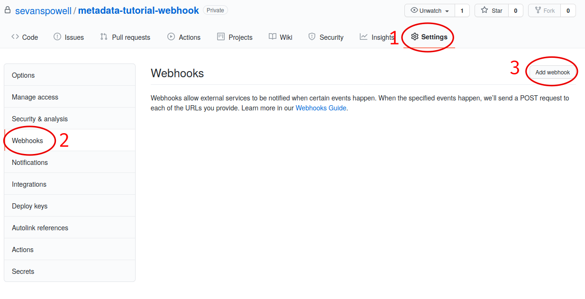

Tutorials¶
As much as possible, the commands in these tutorials are tested. The source code blocks are \"tangled\" out of this documentation file and into bash scripts that are executed in a test environment. This is to ensure that our documentation is up-to-date and working. This does however mean that some of these tutorials require a preamble, to ensure they work in the test environment. You can safely ignore anything listed under a \"Preamble\" heading.
Minting your first asset¶
The off-chain metadata ecosystem provides a system for you to associate data with asset IDs generated when minting an asset. This might be to give a more friendly name to the asset, or to describe the asset in more detail.
So to use the metadata ecosystem, we first need to create (mint) an asset!
-
Preamble
#!/usr/bin/env bash set -euo pipefail -
Pre-requisites
To complete this tutorial you will need to:
- be familiar with the cardano-cli
- have a Cardano node setup (just a simple relay node is fine)
It would also be helpful to read: Cardano Developers: Native Tokens
-
Instructions
-
Setup
First, we need to set
CARDANO_NODE_SOCKET_PATH, so the cardano-cli can communicate with the node:export CARDANO_NODE_SOCKET_PATH=/run/cardano-node/node.socketWe also need to set the network ID to use in subsequent cardano-cli commmands. This will vary depending on whether or not you\'re working on a testnet (
--testnet-magic ...) or mainnet (--mainnet). Set it appropriately.export NETWORK_ID="--testnet-magic 1097911063"Note that if you do set it incorrectly the cardano-cli will give you an error message that will help you determine the correct value, so feel free to just choose something for now.
You can run the following cardano-cli command to test it\'s ability to communicate with the node:
cardano-cli query protocol-parameters \ $NETWORK_IDIf this successfully returns some JSON, you\'re good to continue.
If you see an error something like this:
cardano-cli: HandshakeError (Refused NodeToClientV_8 "version data mismatch: NodeToClientVersionData {networkMagic = NetworkMagic {unNetworkMagic = 1097911063}} /= NodeToClientVersionData {networkMagic = NetworkMagic {unNetworkMagic = 3}}")That means you chose the wrong network magic (3) and need to change your network magic to \"1097911063\" (i.e. use \"
--testnet-magic 1097911063\") -
Funding an address
The minting of assets is done using regular transactions, and regular transactions require fees! So the first thing we\'ll need to do is find (or create) an address with some funds. If you already have an address with some funds, feel free to use that and skip to the next section, but set the
PAYMENT_ADDRenvironment variable accordingly.We\'ll create our payment keys and address:
echo echo "Building payment keys..." cardano-cli address key-gen \ --verification-key-file pay.vkey \ --signing-key-file pay.skey echo echo "Building payment address..." cardano-cli address build \ $NETWORK_ID \ --payment-verification-key-file pay.vkey \ --out-file pay.addr export PAYMENT_ADDR=$(cat pay.addr) echo echo "Payment address is: $PAYMENT_ADDR"And then view the funds associated with the address:
echo echo "UTxOs available:" cardano-cli query utxo \ $NETWORK_ID \ --address $PAYMENT_ADDRIn our case there are no UTxOs associated with this address, and so no funds. We\'ll use the testnet faucet to get some funds:
echo echo "Funding $PAYMENT_ADDR" curl -XPOST https://faucet.cardano-testnet.iohkdev.io/send-money/"$PAYMENT_ADDR"?apiKey="$MY_API_KEY" echo echo "Awaiting funds..." sleep 60 cardano-cli query utxo \ $NETWORK_ID \ --address $PAYMENT_ADDRThe faucet is only available on the testnet. If you don\'t have an API key, you can still get funds from the faucet, you\'ll just need to submit this form: Cardano Testnet Faucet. If you\'re on mainnet, you\'ll need to buy some ADA.
-
Choosing a UTxO
We\'ll need to choose an unspent transaction output (UTxO) to be the source of funds for our minting transaction.
You can browse the unspent transaction outputs associated with an address with the following command:
cardano-cli query utxo \ $NETWORK_ID \ --address $PAYMENT_ADDRWe\'re just going to use the last UTxO in the list, but you can choose whichever UTxO and TxIx you like, as long as it has enough funds to cover the transaction fees.
export UTXO=$(cardano-cli query utxo $NETWORK_ID --address $PAYMENT_ADDR | tail -n1 | awk '{print $1;}') export UTXO_TXIX=$(cardano-cli query utxo $NETWORK_ID --address $PAYMENT_ADDR | tail -n1 | awk '{print $2;}') echo echo "UTxO: $UTXO#$UTXO_TXIX"We\'ll also need to choose an amount of tokens to mint. Here we mint the same number of tokens as we have funds available, but you can choose any positive integer, there\'s no requirement that the amount of tokens minted be equal to the funds used.
export AMT=$(cardano-cli query utxo $NETWORK_ID --address $PAYMENT_ADDR --mary-era | tail -n1 | awk '{print $3;}') echo echo "Amount to mint: $AMT" -
Creating a minting policy
Tokens are minted under a policy. The policy describes under what circumstances new tokens may be minted. We\'re going to create a simple policy that only allows a single key to mint new tokens.
Instead of re-using our payment keys, we\'ll create new keys for token minting:
mkdir policy echo echo "Generating policy keys..." cardano-cli address key-gen \ --verification-key-file policy/policy.vkey \ --signing-key-file policy/policy.skeyThe hash of the verification key will be used in the minting policy:
export KEYHASH=$(cardano-cli address key-hash --payment-verification-key-file policy/policy.vkey) echo echo "Creating policy script..." export SCRIPT=policy/policy.script echo "{" >> $SCRIPT echo " \"keyHash\": \"${KEYHASH}\"," >> $SCRIPT echo " \"type\": \"sig\"" >> $SCRIPT echo "}" >> $SCRIPT cat $SCRIPTNext we\'ll need to name our asset. An asset\'s ID is made up of the policys id (generated from the script) and the assets name concatenated with a period:
export POLICY_ID=$(cardano-cli transaction policyid --script-file $SCRIPT) export ASSET_NAME="quid" echo echo "AssetID is: $POLICY_ID.$ASSET_NAME" -
Minting assets
Now we get to mint our assets! As stated earlier, assets are minted with regular transactions.
We\'ll build a transaction that takes all the ADA in the UTxO we chose and creates two outputs:
- All the ADA in the input UTxO (so we lose none of it)
- The amount of assets we are minting
To ensure the transaction balances, we include the amount of the new asset we\'re minting in the \"mint\" field.
echo echo "Building minting transaction..." cardano-cli transaction build-raw \ --mary-era \ --fee 0 \ --tx-in $UTXO#$UTXO_TXIX \ --tx-out $PAYMENT_ADDR+$AMT+"$AMT $POLICY_ID.$ASSET_NAME" \ --mint="$AMT $POLICY_ID.$ASSET_NAME" \ --out-file mint.raw cat mint.rawOf course, the transaction doesn\'t balance quite yet, we need to pay a fee for the transaction.
First we\'ll write the protocol parameters for the network to a file for convenience:
echo echo "Writing protocol parameters..." cardano-cli query protocol-parameters \ $NETWORK_ID \ --out-file protocol.json cat protocol.jsonAnd then we\'ll calculate the fee and minus that amount from the transaction output. Note that we use a witness count of \"2\". We\'ll later sign this transaction with both the payment key (to use the funds in the UTxO) and the policy key (to permit us to mint some assets).
export FEE=$(cardano-cli transaction calculate-min-fee \ $NETWORK_ID \ --tx-body-file mint.raw \ --tx-in-count 1 \ --tx-out-count 1 \ --witness-count 2 \ --protocol-params-file protocol.json | awk '{print $1;}') export AMT_OUT=$(expr $AMT - $FEE) cardano-cli transaction build-raw \ --mary-era \ --fee $FEE \ --tx-in $UTXO#$UTXO_TXIX \ --tx-out $PAYMENT_ADDR+$AMT_OUT+"$AMT $POLICY_ID.$ASSET_NAME" \ --mint="$AMT $POLICY_ID.$ASSET_NAME" \ --out-file mint.raw cat mint.rawNote that the cost of minting an asset is just the fee required to submit the transaction.
We need to sign the transaction firstly with the key associated with the UTxO we\'re trying to spend, and secondly with the signing key that grants us the right to mint new tokens under a given policy:
cardano-cli transaction sign \ --signing-key-file pay.skey \ --signing-key-file policy/policy.skey \ --script-file policy/policy.script \ --tx-body-file mint.raw \ --out-file mint.signed cat mint.signedOnce that\'s done, we can submit our transaction to the chain:
echo echo "Submiting minting transaction..." cardano-cli transaction submit \ $NETWORK_ID \ --tx-file mint.signedAnd see the result here:
echo echo "Awaiting mint..." sleep 60 cardano-cli query utxo \ $NETWORK_ID \ --address $PAYMENT_ADDRYou should be able to see the resulting asset in your UTxOs. The time required for your transaction to become visible may vary.
-
Burning assets
Assets are destroyed in much the same way they are created: with transactions!
Firstly we determine the ADA availbe in a UTxO:
export ADA_LEFT=$(cardano-cli query utxo $NETWORK_ID --address $PAYMENT_ADDR | tail -n1 | awk '{print $3;}') export UTXO=$(cardano-cli query utxo $NETWORK_ID --address $PAYMENT_ADDR | tail -n1 | awk '{print $1;}') export UTXO_TXIX=$(cardano-cli query utxo $NETWORK_ID --address $PAYMENT_ADDR | tail -n1 | awk '{print $2;}')Then we create and submit the burn transaction, note that we don\'t output any assets in the transaction (as we want to destroy them), and we set the mint field to a negative amount (the amount of tokens we want to burn), so that the transaction balances.
echo echo "Building burn transaction..." cardano-cli transaction build-raw \ --mary-era \ --fee 0 \ --tx-in $UTXO#$UTXO_TXIX \ --tx-out "$PAYMENT_ADDR+$ADA_LEFT" \ --mint "-$AMT $POLICY_ID.$ASSET_NAME" \ --out-file burn.raw export FEE=$(cardano-cli transaction calculate-min-fee \ $NETWORK_ID \ --tx-body-file burn.raw \ --tx-in-count 1 \ --tx-out-count 1 \ --witness-count 2 \ --protocol-params-file protocol.json | awk '{print $1;}') export AMT_OUT=$(expr $ADA_LEFT - $FEE) cardano-cli transaction build-raw \ --mary-era \ --fee $FEE \ --tx-in $UTXO#$UTXO_TXIX \ --tx-out "$PAYMENT_ADDR+$AMT_OUT" \ --mint "-$AMT $POLICY_ID.$ASSET_NAME" \ --out-file burn.raw cat burn.raw cardano-cli transaction sign \ --signing-key-file pay.skey \ --signing-key-file policy/policy.skey \ --script-file policy/policy.script \ --tx-body-file burn.raw \ --out-file burn.signed echo echo "Submitting burn transaction..." cardano-cli transaction submit \ $NETWORK_ID \ --tx-file burn.signed echo echo "Awaiting burn..." sleep 60 cardano-cli query utxo \ $NETWORK_ID \ --address $PAYMENT_ADDRYour assets should have dissappeared from your available UTxOs.
-
Returning faucet funds
If you\'ve obtained funds from the testnet faucet and would like to return them, you can do the following. Be very careful doing this, don\'t do this on mainnet, I don\'t want you sending your hard-earned mainnet funds anywhere!
export ADA_LEFT=$(cardano-cli query utxo $NETWORK_ID --address $PAYMENT_ADDR | tail -n1 | awk '{print $3;}') export UTXO=$(cardano-cli query utxo $NETWORK_ID --address $PAYMENT_ADDR | tail -n1 | awk '{print $1;}') export UTXO_TXIX=$(cardano-cli query utxo $NETWORK_ID --address $PAYMENT_ADDR | tail -n1 | awk '{print $2;}') export FAUCET_ADDR="addr_test1qqr585tvlc7ylnqvz8pyqwauzrdu0mxag3m7q56grgmgu7sxu2hyfhlkwuxupa9d5085eunq2qywy7hvmvej456flknswgndm3" echo echo "Building faucet refund transaction..." cardano-cli transaction build-raw \ --mary-era \ --fee 0 \ --tx-in $UTXO#$UTXO_TXIX \ --tx-out "$FAUCET_ADDR+$ADA_LEFT" \ --out-file return.raw export FEE=$(cardano-cli transaction calculate-min-fee \ $NETWORK_ID \ --tx-body-file return.raw \ --tx-in-count 1 \ --tx-out-count 1 \ --witness-count 1 \ --protocol-params-file protocol.json | awk '{print $1;}') export AMT_OUT=$(expr $ADA_LEFT - $FEE) cardano-cli transaction build-raw \ --mary-era \ --fee $FEE \ --tx-in $UTXO#$UTXO_TXIX \ --tx-out "$FAUCET_ADDR+$AMT_OUT" \ --out-file return.raw cat return.raw cardano-cli transaction sign \ --signing-key-file pay.skey \ --tx-body-file return.raw \ --out-file return.signed cardano-cli transaction submit \ $NETWORK_ID \ --tx-file return.signed echo echo "Awaiting refund..." sleep 60 cardano-cli query utxo \ $NETWORK_ID \ --address $PAYMENT_ADDRYour funds should have dissappeared from your available UTxOs.
-
Submitting your first metadata entry¶
We\'ve named our asset, but there is no name associated with our policy. To name your policy, the cardano-foundation provides an off-chain solution. You submit some metadata to the service and tools such as Daedalus can query this service to retrieve the metadata and provide a nicer name for your token.
-
Creation
-
Subject
The first step in the creation of our metadata is to decide on the subject of our metadata. Our metadata will be keyed by the subject, so when querying a metadata service for the metadata of our asset, we will use the subject in our query.
The standard for wallet metadata is that the subject is equal to the hash of the policy concatenated to the base16-encoded asset name (which can be empty).
We can obtain the hash of the policy like so:
export POLICY_ID=$(cardano-cli transaction policyid --script-file $SCRIPT)where
$SCRIPTis the location of the policy.json file.And the base16-encoding of the asset name like so:
export ASSET_NAME="quid" export ASSET_ENC=$(echo $ASSET_NAME | basenc --base16 | awk '{print tolower($0)}') echo "Asset name '$ASSET_NAME' encoded as base16: '$ASSET_ENC'"This makes our subject:
export SUBJECT="$POLICY_ID$ASSET_ENC" echo "Subject is '$SUBJECT'"If your asset had no name, your subject would be equal to your
POLICY_ID. -
Properties
We can now start creating our metadata entry:
token-metadata-creator entry --init $SUBJECTThis will create a draft JSON file in our current directory.
cat $SUBJECT.json.draft { "subject": "$SUBJECT", "name": null, "policy": null, "description": null }Each key in the JSON map (other than the \"subject\") corresponds to a \"property\". There are three required properties for asset metadata (the kind of metadata we are creating): \"name\", \"description\", and \"policy\".
We can provide these with the following command:
token-metadata-creator entry $SUBJECT \ --name "Quid" \ --description "The un-offical currency of Great Britain." \ --policy $SCRIPTIf we now look at the contents of the draft file:
cat $SUBJECT.json.draft { "subject": "$SUBJECT", "name": { "sequenceNumber": 0, "value": "Quid", "signatures": [] }, "policy": "8200...b16", "description": { "sequenceNumber": 0, "value": "The un-official currency of Great Britain.", "signatures": [] } }We can see that it has populated the \"name\", \"description\", and \"policy\" properties.
-
Signing
To prevent just anyone from submitting metadata for your policy, we must sign the metadata with the keys used to define your asset policy.
Each property may be attested to individually, but for now we can just attest to all properties at once using the \"-a\" flag:
token-metadata-creator entry $SUBJECT -a policy/policy.skey cat $SUBJECT.json.draft { "subject": "$SUBJECT", "name": { "sequenceNumber": 0, "value": "Quid", "signatures": [ { "signature": "02f2...402", "publicKey": "bc77...d04" } ] }, "policy": "8200...b16", "description": { "sequenceNumber": 0, "value": "The un-official currency of Great Britain.", "signatures": [ { "signature": "79a4...601", "publicKey": "bc77...d04" } ] } }You can see that annotated signatures have been added to each attestable property (\"name\" and \"description\"). No signatures have been attached to the \"policy\" property because it is known as a \"verifiable\" property: it\'s authenticity can be inferred from the existing data or verified in a different manner.
-
Finalizing
Finally, we can run the following command to perform some final checks on our draft and spit out a non-draft \".json\" file:
token-metadata-creator entry $SUBJECT --finalize cat $SUBJECT.jsonWe can now move onto submitting this data.
-
-
Submission
Once your metadata has been created, you\'ll need to submit it. Currently, this is done by submitting a PR to the cardano-foundation/cardano-token-registry repository.
First you\'ll need to fork and clone the repository, then cd into it:
cd cardano-token-registry git checkout -b $SUBJECT-metadataThen we\'ll create a new mapping:
cp ../$SUBJECT.json ./mappings/ git add mappings/$SUBJECT.json git commit -m "Add $SUBJECT metadata" git push -u origin $SUBJECT-metadataYou\'ll then need to submit a PR to the cardano-foundation/cardano-token-registry repository using the GitHub web UI.
Once your PR has been approved and merged, your metadata can be viewed at:
curl https://tokens.cardano.org/metadata/$SUBJECTAnd should appear associated with your minted assets in Daedalus, Yoroi, and other products that use this metadata.
Running your own metadata system¶
The metadata system is made up of a few components, each of which we will set up separately. To get a visual overview of what we will be creating, you can refer to the Structure diagram.
We need to:
- Set up a Postgres DB to store metadata
- Set up the metadata-server to read metadata
- Set up the metadata-webhook to write metadata
-
Set up a GitHub repository to receive metadata create/update requests
-
Core services
-
NixOS (recommended)
Configuring a NixOS system to run the core services required for a metadata system is easy, as we\'ve done much of the work for you! The offchain-metadata-tools project provides a number of NixOS modules that setup the metadata system.
-
Preamble
#!/usr/bin/env bash set -euo pipefail -
Configuration
We\'ll presume you\'re configuring a fresh system. You might want to alter these instructions for an existing system
export METADATA_DB="metadata" export METADATA_DB_USER="metadata_server" export METADATA_SERVER_PORT=8080 export METADATA_SERVER_LINUX_USER=metadata-server export METADATA_WEBHOOK_LINUX_USER=metadata-webhook export METADATA_WEBHOOK_PORT=8081 export METADATA_WEBHOOK_SECRET="secret" export NIXOS_CONFIG_FILE="/etc/nixos/configuration.nix" export POSTGRES_PORT=5432We need to make the offchain-metadata-tools project available to our NixOS configuration. There are many ways to do this, but we\'ll use a package called niv:
cd /etc/nixos niv init niv add input-output-hk/metadata-server -b masterThen we can build our configuration. Be warned that the following commands will override any existing configuration you have.
<<nix-setup-preamble>> <<nix-setup-common>> cat <<EOF > metadata-config.nix { config, pkgs, sources, ... }: { imports = [ (sources.metadata-server + "/nix/nixos") ]; services.metadata-server = { enable = true; port = ${METADATA_SERVER_PORT}; user = "${METADATA_SERVER_LINUX_USER}"; postgres = { user = "${METADATA_DB_USER}"; port = ${POSTGRES_PORT}; database = "${METADATA_DB}"; }; }; services.metadata-webhook = { enable = true; port = ${METADATA_WEBHOOK_PORT}; webHookSecret = "${METADATA_WEBHOOK_SECRET}"; user = "${METADATA_WEBHOOK_LINUX_USER}"; gitHubToken = ""; postgres = { socketdir = config.services.metadata-server.postgres.socketdir; port = config.services.metadata-server.postgres.port; database = config.services.metadata-server.postgres.database; table = config.services.metadata-server.postgres.table; user = config.services.metadata-server.postgres.user; numConnections = config.services.metadata-server.postgres.numConnections; }; }; # Ensure metdata-webhook and metadata-server don't start at the same time. This can cause issues as they both act on the state of the postgresql database. systemd.services.metadata-webhook.after = [ "postgres.service" "metadata-server.service" ]; services.postgresql = { enable = true; port = $POSTGRES_PORT; ensureDatabases = [ "\${config.services.metadata-server.postgres.database}" ]; ensureUsers = [ { name = "\${config.services.metadata-server.postgres.user}"; ensurePermissions = { "DATABASE \${config.services.metadata-server.postgres.database}" = "ALL PRIVILEGES"; }; } ]; identMap = '' metadata-server-users root \${config.services.metadata-server.postgres.user} metadata-server-users \${config.services.metadata-server.user} \${config.services.metadata-server.postgres.user} metadata-server-users \${config.services.metadata-webhook.user} \${config.services.metadata-server.postgres.user} metadata-server-users postgres postgres ''; authentication = '' local all all ident map=metadata-server-users ''; }; nix.binaryCaches = [ "https://cache.nixos.org" "https://hydra.iohk.io" ]; nix.binaryCachePublicKeys = [ "cache.nixos.org-1:6NCHdD59X431o0gWypbMrAURkbJ16ZPMQFGspcDShjY=" "hydra.iohk.io:f/Ea+s+dFdN+3Y/G+FDgSq+a5NEWhJGzdjvKNGv0/EQ=" ]; } EOF { config, pkgs, ... }: let sources = import ./nix/sources.nix { inherit pkgs; }; in { # ... Existing config } // (import ./metadata-config.nix { inherit config pkgs sources; })Then we simply rebuild our NixOS system:
nixos-rebuild switchAnd we should be able to insert data into our Postgres database:
<<nix-setup-preamble>> <<nix-setup-common>> export METADATA_PSQL="sudo -u ${METADATA_SERVER_LINUX_USER} psql --dbname ${METADATA_DB} --username=${METADATA_DB_USER} --port ${POSTGRES_PORT}" $METADATA_PSQL \ -c "INSERT INTO metadata (key, value) VALUES ('b377d03a568dde663534e040fc32a57323ec00970df0e863eba3f098717569640a', '{ \"subject\": \"b377d03a568dde663534e040fc32a57323ec00970df0e863eba3f098717569640a\",\"name\": { \"sequenceNumber\": 0,\"value\": \"Quid\",\"signatures\": [{ \"signature\": \"02f259151779aa00307c411a4816d7f8343ae842b74593608ebd2e2597bce33d31c7cf72a26f8771a2635d13b178c1bdd5e4f60884b06898760af40f09aa5402\",\"publicKey\": \"bc77b3196b9da1620f70d2f5095ba42fe6a4e3c03494062d2034cdab2a690d04\" }] },\"policy\": \"82008200581ce62601e8eeec975f3f124a288cd0ecb2973f5fc225629f1401a79b16\",\"description\": { \"sequenceNumber\": 1,\"value\": \"The un-offical currency of Great Britain 2.\",\"signatures\": [{ \"signature\": \"48d45b0f6317a49d4da9c331d4757352795ebb36ea21cf7341595801c0f8fbf7f02bc50eea29372cc591cbe8285b3ea28481b8c71ca9e755ad6890e670387c0e\",\"publicKey\": \"bc77b3196b9da1620f70d2f5095ba42fe6a4e3c03494062d2034cdab2a690d04\" }] } }') ON CONFLICT (key) DO UPDATE SET value = EXCLUDED.value;" curl localhost:${METADATA_SERVER_PORT}/metadata/b377d03a568dde663534e040fc32a57323ec00970df0e863eba3f098717569640a | jq .
-
-
Other (non-NixOS)
-
Preamble
#!/usr/bin/env bash set -euo pipefail -
Pre-requisites
- Basic Postgres installation up and running
- metadata-server, metadata-webhook, jq, and ngrok in path
-
Set up a Postgres DB to store metadata
The requirements for the Postgres DB are fairly simple: a single database containing a single table. The metadata-server tool itself will ensure that the table has the correct schema, so we don\'t even need to set that up.
Let\'s first start with setting some variables, these may need to be different on your system, but this is a good first start.
export METADATA_DB="metadata_db" echo "Metadata will be stored in the '${METADATA_DB}' database..." export METADATA_DB_USER="metadata_server" echo "Metadata will be accessed via the '${METADATA_DB_USER}' database user..." export METADATA_LINUX_USER="metadata-server" echo "The linux user '${METADATA_LINUX_USER}' will access the database..." export POSTGRES_CFG_DIR="/var/lib/postgresql/11.1/" echo "The Postgres config base directory is '${POSTGRES_CFG_DIR}'..." export POSTGRES_CFG_IDENT="${POSTGRES_CFG_DIR}/pg_ident.conf" echo "The Postgres config identity file is found at '${POSTGRES_CFG_IDENT}'..." export POSTGRES_CFG_HBA="${POSTGRES_CFG_DIR}/pg_hba.conf" echo "The Postgres config hba file is found at '${POSTGRES_CFG_HBA}'..." export POSTGRES_CFG="${POSTGRES_CFG_DIR}/postgresql.conf" echo "The Postgres config file is found at '${POSTGRES_CFG}'..." export POSTGRES_PORT="5432" echo "The Postgres database will run on port '${POSTGRES_PORT}'..."Next, we need to configure Postgres. First we will set up an identity map:
echo "Writing '${POSTGRES_CFG_IDENT}'..." cat <<EOF > $POSTGRES_CFG_IDENT metadata-server-users $METADATA_LINUX_USER $METADATA_DB_USER metadata-server-users postgres postgres EOFNext we will set up our authentication methods:
echo "Writing '${POSTGRES_CFG_HBA}'..." cat <<EOF > $POSTGRES_CFG_HBA local all all ident map=metadata-server-users local all all peer host all all 127.0.0.1/32 md5 host all all ::1/128 md5 EOFFinally we will write out our base Postgres configuration:
echo "Writing '${POSTGRES_CFG}'..." cat <<EOF > $POSTGRES_CFG hba_file = '$POSTGRES_CFG_HBA' ident_file = '$POSTGRES_CFG_IDENT' listen_addresses = 'localhost' log_destination = 'stderr' log_line_prefix = '[%p]' port = $POSTGRES_PORT EOFTo ensure that our configuration changes have taken effect, restart the postgres service. This exact command may vary system-to-system:
systemctl restart postgresql.serviceNow that we\'ve configured our Postgres installation, we need to create our database and database user:
echo "Creating database '${METADATA_DB}' and user '${METADATA_DB_USER}'..." export PSQL="sudo -u postgres psql --port=$POSTGRES_PORT" $PSQL -c "CREATE DATABASE "$METADATA_DB $PSQL -c "CREATE USER "$METADATA_DB_USER $PSQL -c "GRANT ALL PRIVILEGES ON DATABASE "$METADATA_DB" TO "$METADATA_DB_USERNow we should be able to connect to the database!
export METADATA_PSQL="sudo -u ${METADATA_LINUX_USER} psql --dbname ${METADATA_DB} --username=${METADATA_DB_USER} --port ${POSTGRES_PORT}" $METADATA_PSQL -c "\echo hello"If we were to investigate the tables in the database:
$METADATA_PSQL -c "\d"It should return \"Did not find any relations\", because we haven\'t created any tables. We will let the metadata-server create the required table for us later on.
This finishes our Postgres configuration. It gets easier from here!
-
Set up the metadata-server to read metadata
Now that we have a place to store metadata, we need to set up a metadata-server to read the metadata.
Thankfully, this is relatively easy:
export METADATA_SERVER_PORT=8080 sudo -u "${METADATA_LINUX_USER}" metadata-server \ --db "${METADATA_DB}" \ --db-user "${METADATA_DB_USER}" \ --port "${METADATA_SERVER_PORT}" & sleep 5This command will start up the metadata server and create the metadata table for us in the database.
Let\'s now insert a fake piece of metadata into the postgres DB we set up so we have some metadata to view.
$METADATA_PSQL \ -c "INSERT INTO metadata (key, value) VALUES ('b377d03a568dde663534e040fc32a57323ec00970df0e863eba3f098717569640a', '{ \"subject\": \"b377d03a568dde663534e040fc32a57323ec00970df0e863eba3f098717569640a\",\"name\": { \"sequenceNumber\": 0,\"value\": \"Quid\",\"signatures\": [{ \"signature\": \"02f259151779aa00307c411a4816d7f8343ae842b74593608ebd2e2597bce33d31c7cf72a26f8771a2635d13b178c1bdd5e4f60884b06898760af40f09aa5402\",\"publicKey\": \"bc77b3196b9da1620f70d2f5095ba42fe6a4e3c03494062d2034cdab2a690d04\" }] },\"policy\": \"82008200581ce62601e8eeec975f3f124a288cd0ecb2973f5fc225629f1401a79b16\",\"description\": { \"sequenceNumber\": 1,\"value\": \"The un-offical currency of Great Britain 2.\",\"signatures\": [{ \"signature\": \"48d45b0f6317a49d4da9c331d4757352795ebb36ea21cf7341595801c0f8fbf7f02bc50eea29372cc591cbe8285b3ea28481b8c71ca9e755ad6890e670387c0e\",\"publicKey\": \"bc77b3196b9da1620f70d2f5095ba42fe6a4e3c03494062d2034cdab2a690d04\" }] } }') ON CONFLICT (key) DO UPDATE SET value = EXCLUDED.value;"Now we we query the metadata server:
curl localhost:${METADATA_SERVER_PORT}/metadata/b377d03a568dde663534e040fc32a57323ec00970df0e863eba3f098717569640a | jq .we should see the data we inserted:
{ "subject": "b377d03a568dde663534e040fc32a57323ec00970df0e863eba3f098717569640a", "name": { "sequenceNumber": 0, "value": "Quid", "signatures": [ { "signature": "02f259151779aa00307c411a4816d7f8343ae842b74593608ebd2e2597bce33d31c7cf72a26f8771a2635d13b178c1bdd5e4f60884b06898760af40f09aa5402", "publicKey": "bc77b3196b9da1620f70d2f5095ba42fe6a4e3c03494062d2034cdab2a690d04" } ] }, "policy": "82008200581ce62601e8eeec975f3f124a288cd0ecb2973f5fc225629f1401a79b16", "description": { "sequenceNumber": 1, "value": "The un-offical currency of Great Britain 2.", "signatures": [ { "signature": "48d45b0f6317a49d4da9c331d4757352795ebb36ea21cf7341595801c0f8fbf7f02bc50eea29372cc591cbe8285b3ea28481b8c71ca9e755ad6890e670387c0e", "publicKey": "bc77b3196b9da1620f70d2f5095ba42fe6a4e3c03494062d2034cdab2a690d04" } ] } }If so, we have successfully set up the metadata server!
-
Set up the metadata-webhook to write metadata
Usually, data is not written directly to the Postgres database, rather the metadata-webhook service receives push event information from GitHub and writes data accordingly.
To start the metadata-webhook service, execute the following:
export METADATA_WEBHOOK_PORT=8081 export METADATA_WEBHOOK_SECRET="secret" sudo -u "${METADATA_LINUX_USER}" metadata-webhook \ --db "${METADATA_DB}" \ --db-user "${METADATA_DB_USER}" \ --port "${METADATA_WEBHOOK_PORT}" & sleep 5To test the webhook locally, we\'re going to use a tool called ngrok to provide us with a public url to our local service:
ngrok http ${METADATA_WEBHOOK_PORT} & sleep 5 export WEBHOOK_PUBLIC_URL="$(curl http://127.0.0.1:4040/api/tunnels | jq '.tunnels[] | select(.proto == "https") | .public_url')/webhook"Please note that this URL will expire after about an hour. You\'ll have to repeat the above two commands to get a new URL.
We can now send GitHub payloads to this URL and our metadata-webhook will receive them. To test that this actually works, we need to setup a GitHub repository.
-
-
-
GitHub repository
-
Webhook
First create a GitHub repository. This will be where you will manage asset metadata.
Next, from the GitHub web UI, set up a webhook by heading to Settings > Webhooks > Add webhook.

Next, copy in your webhook URL to the \"Payload URL\" field:
echo "Webhook Public URL is: ${WEBHOOK_PUBLIC_URL}"Make sure to:
- set \"Content type\" to \"application/json\"
- set \"Secret\" to \"secret\" (you can use anything here, but make sure metadata-webhook is launched with the same secret)
- click \"Add webhook\":

GitHub will send a \"ping\" payload to the webhook and it will fail, as the metadata-webhook doesn\'t accept any payload other than \"push\" payloads. You can safely ignore this error.
To truly test our metadata-webhook we\'ll need to push some metadata to the repository.
Somewhere in the repository create a file called \"test.json\" with the following contents:
{ "subject": "test" }Then commit and push it to the repository:
git add test.json git commit -m "WIP" git pushIf all went well, we can query the metadata-server for our subject:
curl localhost:${METADATA_SERVER_PORT}/metadata/test | jq .And see it returned to us.
In case of issue, you can view the payloads sent by GitHub from the webhook settings page.
-
Pull request validation
Letting just anyone commit metadata to your repository is likely not what you want. We recommend accepting pull requests to your repository and using metadata-validator-github and token-metadata-creator to automate some of the vetting of PRs.
One easy way to do this is with GitHub actions. Create the following file in your repository:
mkdir -p .github/workflows touch .github/workflows/ci.yamlAnd fill the file with the contents of https://raw.githubusercontent.com/cardano-foundation/cardano-token-registry/master/.github/workflows/ci.yaml. This should always be the most up-to-date version of the PR validation script that we use.
This script will automatically fetch the latest versions of the metadata-validator-github and token-metadata-creator tools and run them on every PR to your repository.
By default, the validation script ensures that metadata files are written to the \"mappings\" directory, so when adding metadata from now on, make sure to add it to the \"mappings\" directory. See here for an explanation of why this is.
Congratulations on setting up your own metadata system!
-
How-to¶
Set up the Nix cache¶
For both building with nix-build and using nix-shell, it might take
a very long time if you do not have the Cardano binary cache set up.
Adding the IOHK binary cache to your Nix configuration will speed up
builds a lot, since many things will have been built already by our CI.
If you find you are building packages that are not defined in this repository, or if the build seems to take a very long time then you may not have this set up properly.
To set up the cache:
-
On non-NixOS, edit /etc/nix/nix.conf and add the following lines:
substituters = https://hydra.iohk.io https://iohk.cachix.org https://cache.nixos.org/ trusted-public-keys = hydra.iohk.io:f/Ea+s+dFdN+3Y/G+FDgSq+a5NEWhJGzdjvKNGv0/EQ= iohk.cachix.org-1:DpRUyj7h7V830dp/i6Nti+NEO2/nhblbov/8MW7Rqoo= cache.nixos.org-1:6NCHdD59X431o0gWypbMrAURkbJ16ZPMQFGspcDShjY= -
On NixOS, set the following NixOS options:
nix = { binaryCaches = [ "https://hydra.iohk.io" "https://iohk.cachix.org" ]; binaryCachePublicKeys = [ "hydra.iohk.io:f/Ea+s+dFdN+3Y/G+FDgSq+a5NEWhJGzdjvKNGv0/EQ=" "iohk.cachix.org-1:DpRUyj7h7V830dp/i6Nti+NEO2/nhblbov/8MW7Rqoo=" ]; };
Build the project from source¶
-
Using Nix
From the root directory of the project
nix-build -A projectwill build all project components, including test suites.To build a particular executable, say
token-metadata-creator, usenix-build -A token-metadata-creator.To enter a development shell, use
nix-shell default.nix -A shell. This will enter a development shell for which haskell.nix provides all dependencies.To enter a development shell with a compiler, build tools, and system libraries, but without Haskell packages, use
nix-shell default.nix -A cabal-shell. You can then use cabal to build all Haskell package dependencies.
Make a release¶
Follow this checklist when making a release.
-
Preparing the release
- [ ] Update the versions of all sub-projects.
- [ ] Update the CHANGELOG.
- [ ] Ensure that a new version of the api docs have been created under a new folder, and the symbolic link at docs/api/latest has been updated.
- [ ] Deploy offchain-metadata-tools to testnet such that metadata-server is available at https://metadata.cardano-testnet.iohkdev.io/ and new metadata can be added in https://github.com/input-output-hk/metadata-registry-testnet.
-
Create the release notes
- [ ] Add a draft release to
https://github.com/input-output-hk/offchain-metadata-tools/releases,
so that the release notes can be reviewed.
- [ ] Include CHANGELOG updates in the release notes.
- [ ] Include the binaries for the master builds of executables of the project, as well as their sha256 sum.
- [ ] Add a draft release to
https://github.com/input-output-hk/offchain-metadata-tools/releases,
so that the release notes can be reviewed.
-
Acceptance tests
/It is assumed that offchain-metadata-tools have been deployed to testnet infrastructure prior to the release so e2e acceptance tests can be executed./
-
[ ] Verify the release notes point to relevant API documentation and manual.
-
[ ] Download release artifacts from the release page and make them available on
$PATH. -
[ ] Go over e2e acceptance tests -> https://github.com/input-output-hk/offchain-metadata-tools/tree/master/test/Acceptance.md
-
[ ] Run locally automated scenarios from https://github.com/input-output-hk/offchain-metadata-tools/tree/master/token-metadata-creator/test
-
[ ] Run pre-release load tests from https://github.com/input-output-hk/offchain-metadata-tools/tree/master/test/load
{=html} <!-- -->$ npm install $ npm test -
-
Publication
- [ ] Once everyone has signed off (i.e. Tech lead, QA, Ops & Release manager), publish the release.
Reference¶
Components of the offchain-metadata-tools project¶
-
metadata-lib
metadata-lib is a Haskell library that provides a core set of tools for writing metadata-related services.
It\'s structure is as follows:
-
Cardano.Metadata.Server.API
A structured definition of the read-only metadata-server web API.
-
Cardano.Metadata.Server.Types
Types required to define the API specified in Cardano.Metadata.Server.API.
-
Cardano.Metadata.Server
The logic of the metadata-server, and a web application. The application issues read commands to a StoreInterface, which determines how reading is actually performed.
-
Cardano.Metadata.Store.Types
Defines the interface for reading/writing/deleting/updating the storage layer of the metadata-server. Implementations must pass the set of tests specified in Test.Cardano.Metadata.Store.
-
Cardano.Metadata.Store.Simple
A simple implementation of the above, used only for testing.
-
Cardano.Metadata.Types.Common
A collection of types, helper functions, and definitions that are used across the project.
-
Cardano.Metadata.Types.Weakly
A weakly-typed view of metadata that we use in the server parts of this library. The original specification saw metadata simply as a JSON map. The view of metadata defined in this module is slightly more strongly-typed than that, mostly for convenience, and to provide a more meaningful name to the data.
-
Cardano.Metadata.Transform
One of our goals for this project was to provide a validation framework for metadata, allowing us and others to easily define and combine validation rules to provide the validation logic for various metadata entries.
This module provides a toolset that takes regular validation functions and allows them to be combined in the traditional monadic/applicative style in a way that makes sense.
-
Cardano.Metadata.Transform.Reader
An implementation of the above.
-
Cardano.Metadata.Validation.Rules
A collection of core rules and helpers that can be used across off-chain metadata projects.
-
Cardano.Metadata.Validation.Types
Contains a strongly-typed view of Metadata and various types and helpers used in the validation component of this library.
-
Cardano.Metadata.Validation.GitHub
Rule definitions for GitHub PRs that seek to create of modify metadata.
-
Cardano.Metadata.Webhook.API
A structured definition of the web API used to write data to the metadata storage layer.
-
Cardano.Metadata.Webhook.Types
Types used to define the above and to decode JSON events from GitHub.
-
Cardano.Metadata.Webhook.Server
Implementation of the webhook API. Like the metadata-server, is also defined against an interface to the storage layer.
-
Test.Cardano.Helpers
Helpers for writing tests.
-
Test.Cardano.Metadata.Generators
Generators for the property tests.
-
Test.Cardano.Metadata.Store
A set of property tests that implementations of the StoreInterfaces should pass to be considered valid implementations.
-
-
metadata-server
Service that provides read-only access to metadata, keyed by metadata subject and optionally, property name. Uses a Postgres database as the storage layer.
-
metadata-validator-github
Tool used to validate the form of GitHub PRs. It currently ensures:
- That the base branch of a PR matches the expected base branch
- That at least one file has changed
- That files are only added or modified, not removed or renamed
-
metadata-store-postgres
Haskell library that provides a Postgres implementation of the interface to the metadata storage layer.
-
metadata-webhook
The metadata-server is read-only, the webhook provides the ability to write to the metadata storage layer. It is a GitHub webhook that receives information about commits to master on a metadata GitHub repository, and updates the storage layer to match.
-
token-metadata-creator
A project concerned primarily with asset/token metadata, that provides:
- An executable to create asset metadata and validate it.
- A Haskell library to create and validate asset metadata.
Structure diagram¶
The following is a diagram that shows how the various components of this project work together to form the metadata system:

Explanation¶
Why is metadata-store-postgres packaged as a separate library?¶
Our haskell.nix Nix infrastructure used to have issues with postgres, namely it couldn\'t provide us with a static musl binary if postgres was in the dependency tree somewhere. To be able to provide a static binary for the token-metadata-creator tool, we removed the metadata-store-postgres library from the core metadata-lib library and packaged it separately.
The haskell.nix Nix infrastructure has since been fixed but the decision was made to keep metadata-store-postgres as a separate library, as it provides a helpful example for those wishing to implement their own metadata storage layer.
Why are metadata entries kept in a separate directory (e.g. \"mappings\")?¶
Metadata entries on our GitHub repository are kept in a non-root level directory to ensure that our GitHub page loads quickly even if we have thousands of metadata entries.
How do we test the tutorials?¶
The tutorials are written in the Org format. org-babel is an emacs package that allows us to extract the source blocks from the documentation in a process known as \"tangling\". We write commands to be executed in source blocks with the following format:
#+BEGIN_SRC shell :tangle no-nix-setup.sh :tangle-mode (identity #o755)
#+END_SRC
This introduces a source code block (of type \"shell\" or \"bash\") that
when tangled, is written out to a file called no-nix-setup.sh with
0755 permissions (rwx/r-x/r-x).
A Nix derivation calls emacs and tangles this documentation file, producing various scripts specified by the source code blocks. These are our documentation scripts.
To test these scripts, NixOS tests are setup to run the scripts in a minimal environment and ensure that they pass.
If you wish to run the scripts on your own machine, you can build them with (from the root directory of this project):
nix-build default.nix -A docScripts
and find them in ./result/bin/*.